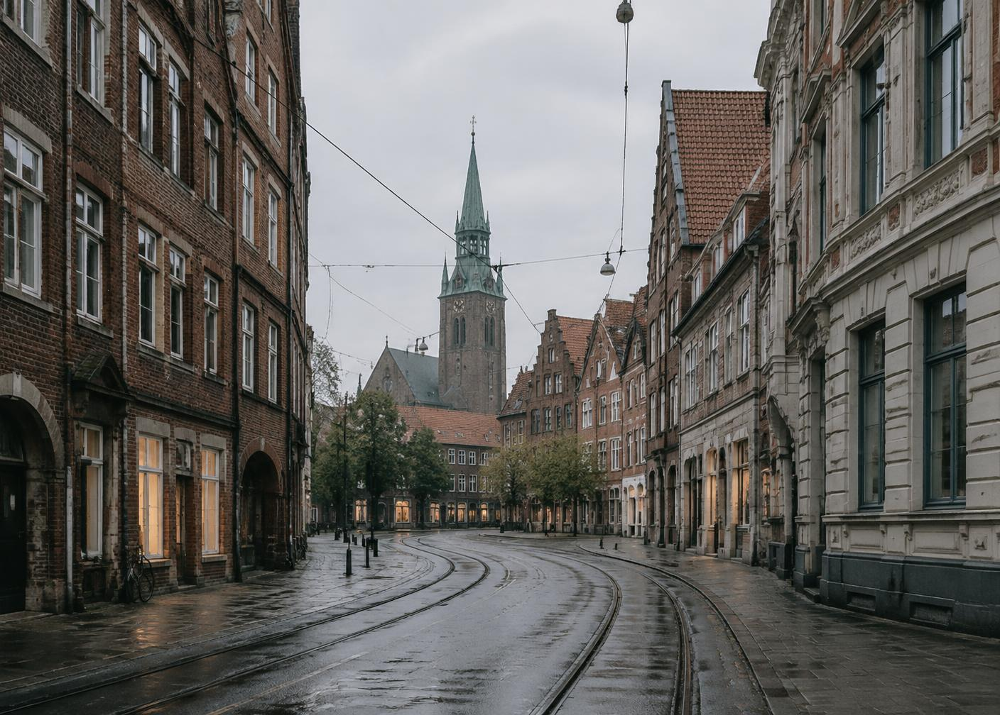

Львів → Ганновер
Львів — Ганновер: підготуйте звернення про бажану дату, місце прибуття й багаж. Можливість поїздки та умови підтверджує перевізник.
Що погодити з перевізником
Плануєте взяти велосипед? Назвіть його тип, розміри й приблизну вагу та спершу запитайте, чи можливе перевезення. Вимоги до пакування й можливу вартість погодьте після цього.
- Можливість поїздки на бажану дату
- Ціна та оплата
- Посадка й висадка
- Багаж і можливі пересадки
Уточнити поїздку
Додайте бажану дату, кількість пасажирів і телефон. Відкриється WhatsApp із готовим текстом: перевірте його й надішліть самостійно. Перевізник підтвердить можливість поїздки на бажану дату та її умови. Запит не резервує місце. Дата ще невідома або не користуєтеся WhatsApp? Відкрийте сайт перевізника — для переходу не потрібно вводити дату чи телефон.
Де ви хочете прибути у Ганновері?
Назвіть район, адресу або бажаний орієнтир: наприклад, Hannover Hbf чи ZOB. Запитайте, чи можлива висадка у потрібному місці та яку точку можна погодити.
Сплануйте подальшу дорогу окремо
Після погодження можливого місця та орієнтовного часу прибуття перевірте наступну частину дороги. Для самостійного планування скористайтеся інформацією міста про громадський транспорт; вона не визначає зупинку перевізника й не гарантує стиковку.
Узгодьте доїзд до Львова з часом виїзду
Якщо ви добираєтеся до Львова поїздом або автобусом з іншого населеного пункту, повідомте перевізнику орієнтовний час прибуття. Залиште достатній запас часу на випадок затримок та погодьте точне місце зустрічі у Львові.
Що вибрати, якщо мого населеного пункту немає в пошуку?
Виберіть найближче доступне місто для пошуку. У приватному зверненні назвіть фактичний населений пункт, район або адресу та запитайте, чи можлива там посадка або висадка. Вибір у пошуку не означає, що потрібно їхати до цього міста; потрібне місце може виявитися недоступним.
Що робити, якщо плани змінилися після звернення?
Повідомте перевізнику, що саме змінилося, і попросіть переглянути домовленості. Не покладайтеся на попереднє погодження для нової дати чи іншого місця.
